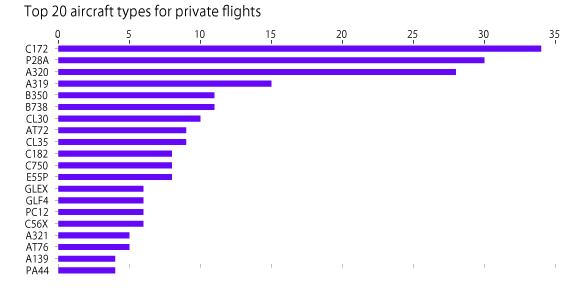
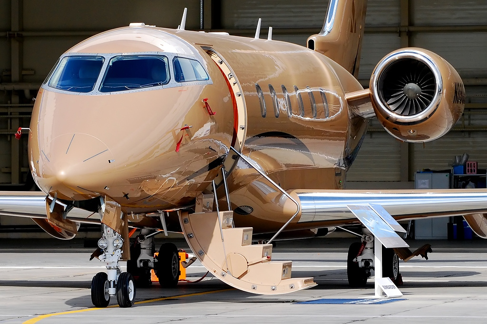
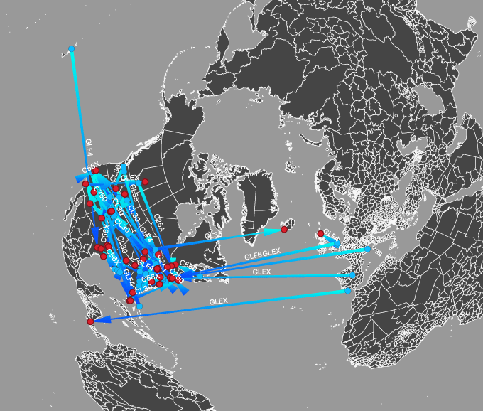
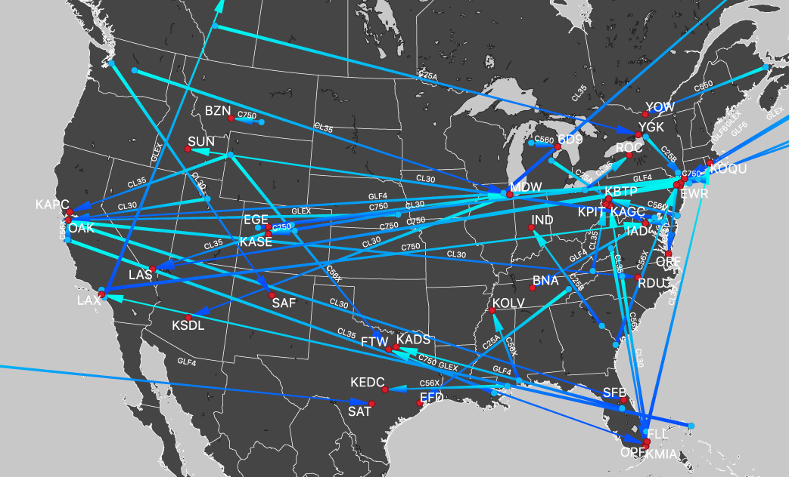
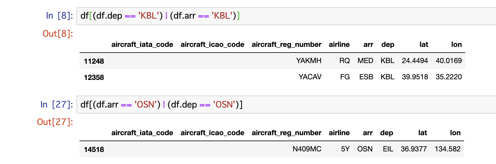

A lot of airplanes make flights everyday. Tens of thousands of flights connect airports to airports. Thanks to that, more and more people enjoy flying and are able to move quickly.
But still very few people enjoy more luxuary flights. Private jets offer flight at anytime when you want and to airport where otherones cannot approach easily.
How those unecofriendly and highcost flights are used. For business, leisure, tourlism, etc...?
How to see the world above the clouds
I used the Aviation Edge API to get the data of the flights. This API is collecting the public signals from flying aircrafts about position, destination, origins, speed, type of the aorcraft, etc., and offers 100 free requests for users.
When I requested the data at 16:42 on July 9(EST), there were 18,218 airplanes in the sky. I selected only the planes which don't have airline code, which means that those flights are not scheduled ones but under private purposes.
After the filtering, I got 375 flights. I connected the origin port and destination port by arrows with the label of the aircraft code. Can we see the activity of private flights at a glance?
Top 10 destinations and origins
Sources: Aviation Edge API edited by KENJI ASADA
Let's see where they are going to. The top of the destinations is "SXF". This is the code of Berlin Schönefeld Airport, the 2nd airport for Berlin. I could not find the reason why so many private flights are going to the capital city of Germany. Second top is "SGD", this is the code of Charles de Gaulle Airport in Paris. The 3rd is "SCF", Scottsdale Airport in Phoenix, U.S.A.
On the other hand, the origins of those flights are totally different. The top "DVT" is Deer Valley Airport, another airport in Phoenix. This airport has been used as a center of general aviation and militery purposes. This city is a hub of aviational education. So the private flights around Phoenix seem to be educational trainings. The other top is "TXL", Berlin Tegel Airport and the 3rd is "MUC", Munich International Airport. I have not figured out the reason why so many flights are centralized to Germany.
Private jets are mainly used in U.S.A.
We found that the private flights include training flights. To approach the real figure of private jets world, let me show you the chart below.

Sources: Aviation Edge API edited by KENJI ASADA
The top 2 types of aircrafts, "C172" and "P28A" are small and propeller driven aircrafts. Those are not "business jets", but planes for training, hobby, measurement, or agriculture.
"A319" and "A320" are midium size passenger plane made by European maker Airbus. Those are sometimes used for super luguxary private jets for billionaires, but, in fact, most of them are chartered plane for tours conducted by tourlism companies. For example, a A320 whose registration number is "GMIDO" has no airline code, but actually it is owned by British Airways. We can comfirm that here.
Then, which is the typical "private jet"? CL30 and CL35 are Bombardier's rear engine business jets. The best sellers are Cessna's Citation Series and Gulfstream's products, which are described as codes like "C25A", "C550", "GLF4", etc... Where are they flying?Where are they flying?

Bombardier CL300 (Wikipedia)
Above is the picture of one typical private jet, Bombardier C300 which has IATA aricraft code "CL30". I filtered the data by aircraft codes and got the image which show only those typical private jets. We found something wierd. Look at the next image.

Image: By KENJI ASADA
Most of the private jets' flights are related to U.S.A. This luxualy thing is still unpoluar in the rest of the world. Let's close up to the U.S.A.

Image: By KENJI ASADA
We can see that the most of the flights are between large cities such as New York, San Francisco, Chicago, etc. Some aircrafts are heading to Las Vegas and Miami, but I suppose that those are mainly business purposes.
After the 2008 global financial crisis, exectives of large companies which requested help for government were blamed for their use of business jets. Those have been regarded as symbol of wealth and sometimes arrogance. But from other aspect, those are a great invention to make peoples life more efficient than ever.
In U.S.A., where the population is leaner than Europe and East Asia, the transportation between the large cities are less convenient. Instead of highways and rapid trains, business jets are sometimes seriously necessary for the people who should not lose their time.
I have no time to investigate this dataset further than this for now, but actually a lot of possibilities are hidden beneath the surfcace of this data. Althought we cannot see the militaly flights directly, a lot of militaly related flights are visible. For example, armies hires freight aircraft to send weapons or foods for the soldiers. A lot of the airplanes are flying to or from the airbases in the world. If you search the codes like "OSN" or "KBL", you'll be confronted by some interesting results. "OSN" is the airport code of US Airbase in Osan, South Korea, and "KBL" is that of airport in Kabul, the capital of Afganistan.

Image: By KENJI ASADA
If we could notice the increase of freight to militaly base, we should watch the militaly activities and could predict some conflicts. It is seriously useful for journalists.